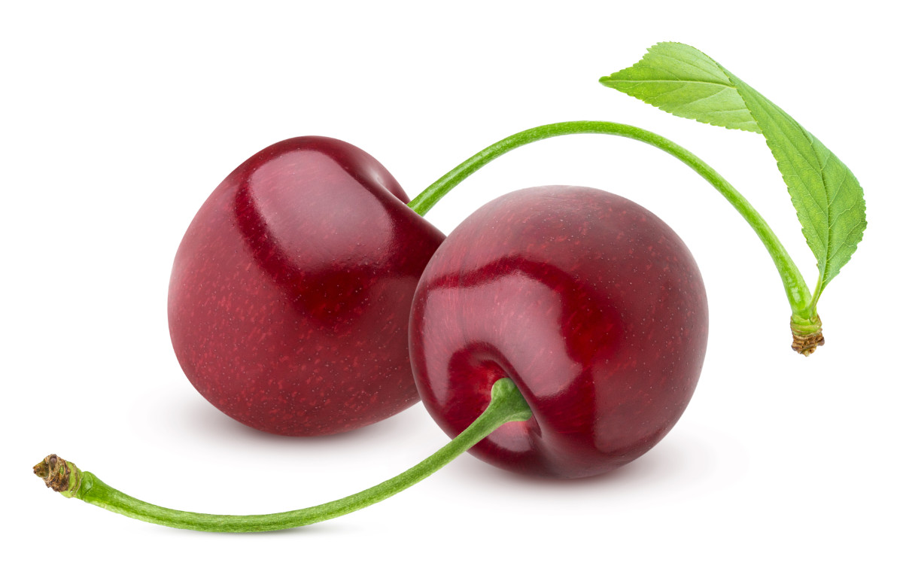

Les cerises sont des fruits charnus et sucrés, prisés pour leur saveur délicate et leur couleur rouge vif.
Elles sont souvent consommées fraîches, en tartes ou utilisées pour fabriquer des confitures et des jus.
Riches en antioxydants et en vitamines, notamment la vitamine C, les cerises sont aussi reconnues pour leurs
propriétés anti-inflammatoires et leur capacité à favoriser un meilleur sommeil.
